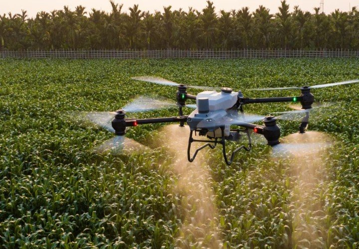
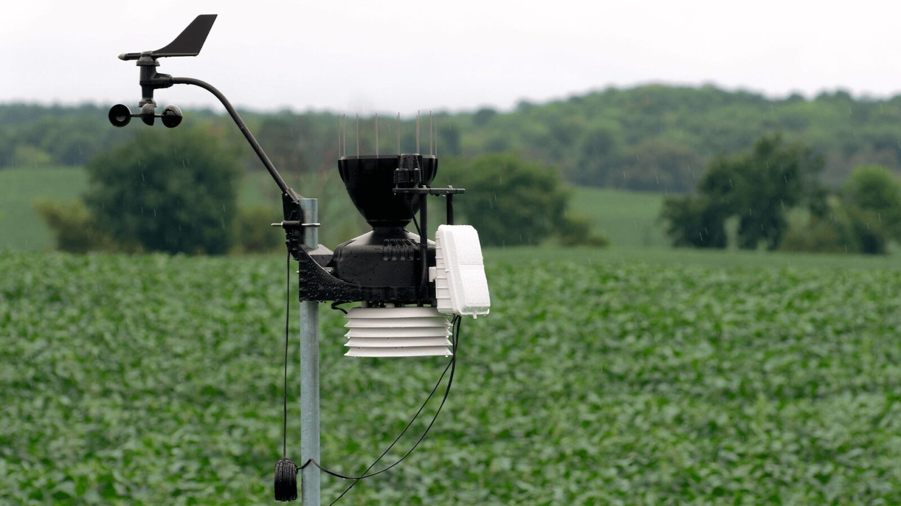

Galeria Tecnológica




Conheça como a tecnologia está revolucionando a agricultura com inteligência artificial, drones, sensores e agricultura de precisão.
Monitoramento de plantações e análise aérea.
Controle de umidade e nutrientes do solo.
Máquinas autônomas aumentam produtividade.
Dados climáticos e monitoramento em tempo real.


Produtividade (%)
Economia de Água (%)
Eficiência (%)